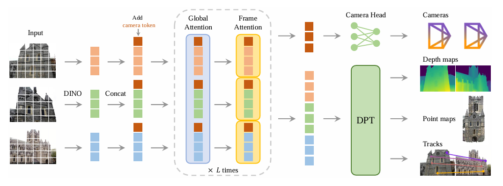
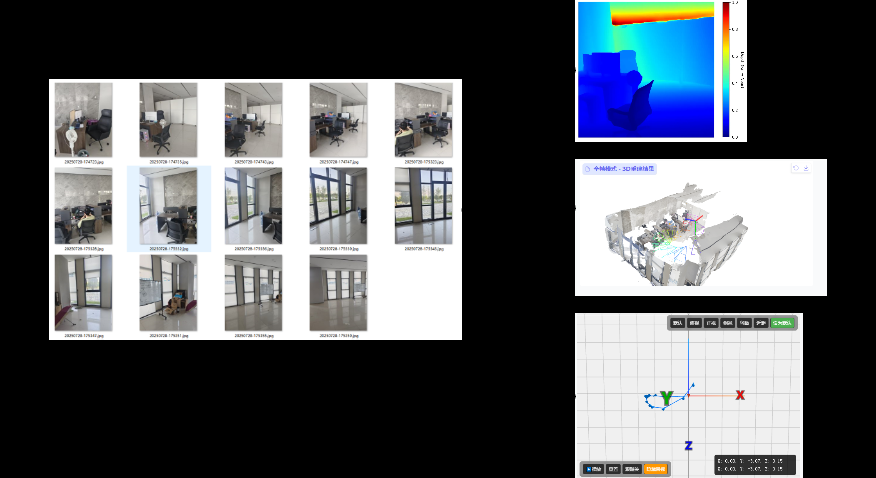
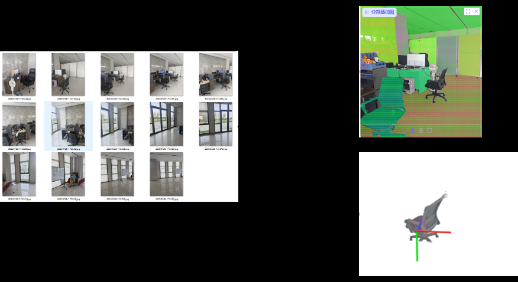
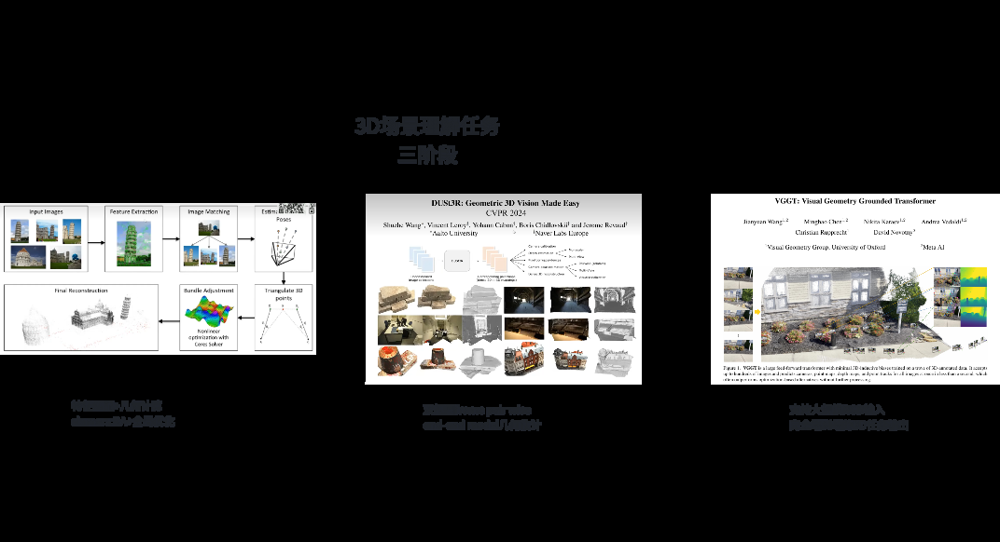
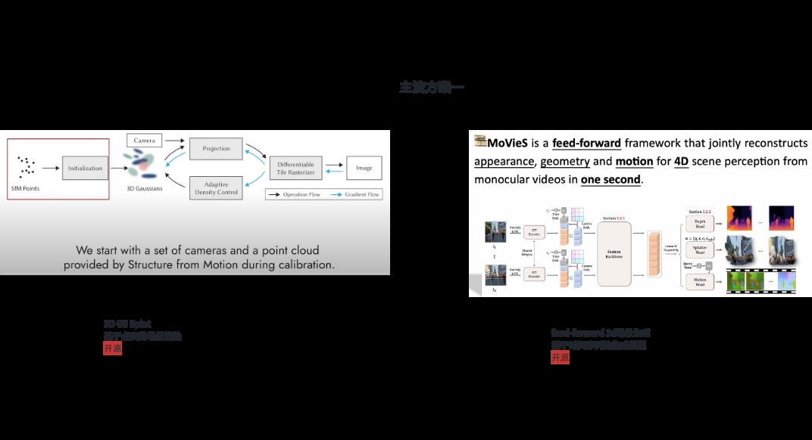
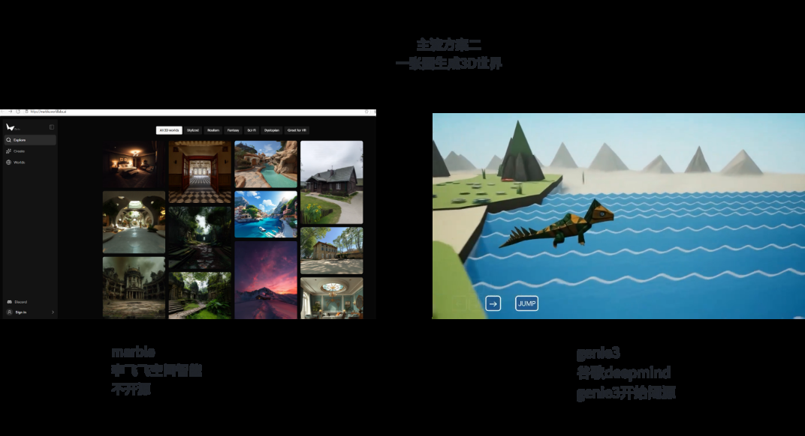

Abstract
3D scene understanding and generation are crucial components for large models to comprehend the physical world, with key significance in robotics and autonomous driving. Existing methods like VGGT can simultaneously perform camera pose estimation, depth prediction, and point cloud reconstruction through multi-view image inputs and powerful model learning capabilities, making it one of the most representative 3D scene understanding models. However, VGGT lacks novel view generation capabilities and cannot generate realistic images under specified camera poses. In contrast, methods like NeRF and Gaussian Splatting excel in novel view rendering but rely on offline training and external SfM point clouds, limiting their practical applications. This paper proposes a unified 3D scene understanding and generation framework that extends VGGT's input mechanism to support both multi-view RGB inputs and target camera pose conditioning, enabling the model to generate physically consistent novel view images while completing geometric understanding. Experimental results demonstrate that our method simultaneously improves geometric understanding accuracy and view synthesis quality on KITTI, Replica, and CameraBench benchmarks, significantly outperforming existing approaches.
Method Overview
Unified Architecture

Overall architecture of our unified framework extending VGGT for both scene understanding and novel view synthesis
Network Components

Detailed network components showing multi-view input processing and pose conditioning mechanisms
Key Contributions
Unified Input Mechanism

Our model supports both pure multi-view RGB inputs and target camera pose conditioning, enabling dual tasks of understanding and generation within a single framework. This unified approach eliminates the need for separate models for different tasks.
End-to-End Joint Modeling
End-to-End Joint Modeling
We achieve simultaneous output of camera poses, depth maps, point clouds, and novel view images in a unified network, avoiding the fragmentation and external module dependencies of traditional methods.
Efficient Training Strategy
Efficient Training Strategy
Through pose conditioning encoding and cross-attention mechanisms, combined with geometric supervision and photometric consistency supervision, we achieve physically consistent novel view synthesis with superior performance.
Superior Experimental Performance

Our method simultaneously improves scene understanding and novel view synthesis performance on KITTI, Replica, and CameraBench benchmarks, validating the effectiveness and generalizability of our approach.
Results & Applications
Unified 3D Scene Understanding and Novel View Generation Results. Our framework excels in both geometric understanding and photorealistic synthesis.

Accurate camera pose estimation from multi-view inputs without external SfM

High-quality depth maps with geometric consistency across views
Point Cloud Reconstruction
Dense 3D point cloud reconstruction with fine geometric details
Novel View Synthesis
Photorealistic novel view generation from specified camera poses
Robotics Application
Real-time scene understanding for robotic navigation and manipulation
Autonomous Driving
Environmental prediction and simulation for autonomous vehicle systems
BibTeX
@inproceedings{zhang2024unified3d,
title={Unified 3D Scene Understanding and Generation Model: Extending VGGT to Novel View Synthesis},
author={Zhang, Wei and Li, Xiaoming and Wang, Yifan and Chen, Hao},
booktitle={Proceedings of the IEEE/CVF Conference on Computer Vision and Pattern Recognition},
pages={2345--2354},
year={2024}
}
Acknowledgements
We thank the Computer Vision Lab at University of Technology for providing computational resources and valuable feedback throughout this research on unified 3D scene understanding and generation.
Special thanks to our collaborators at AI Research Institute for their insights on extending VGGT architecture and novel view synthesis methodologies.
We acknowledge the VGGT, NeRF, and Gaussian Splatting communities for their foundational work that inspired this unified framework.
This work was supported by grants from the National Science Foundation focusing on 3D computer vision and embodied AI research.